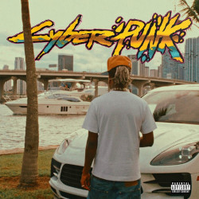
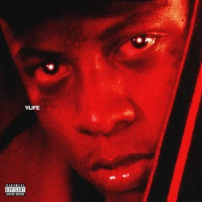
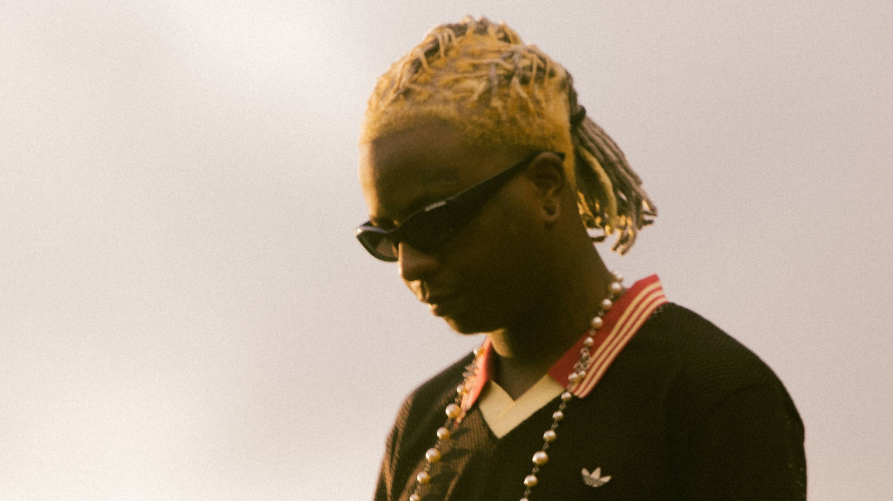
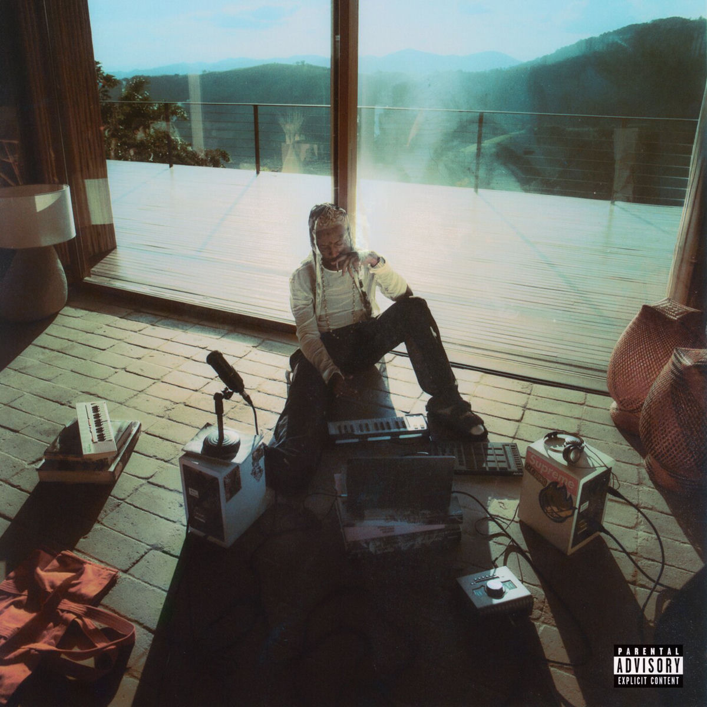

Marcos Vinícius Albano, 27, também conhecido como Yunk Vino nasceu em Carapicuíba, São Paulo e começou sua carreira musical em 2018 de forma independente. Em 2019, o artista abriu um show do Racionais ao lado do rapper Aka Rasta, para no ano seguinte adentrar o selo musical Labbel Records, da Boogie Naipe e iniciar a produção de seu primeiro trabalho: o álbum ‘‘237’’. Atualmente, o artista coleciona mais de três milhões de ouvintes mensais e é um dos nomes mais crescentes do cenário do trap nacional.

Depois do lançamento de ‘‘Meu Amigo Diário, Vol. 1 – M.A.D’’, ano passado, com faixas ‘‘Diálogo’’, ‘‘Animais’’ e ‘‘Bape & Tommy’’, Yunk Vino volta às páginas de seu diário para lançar M.A.D 2 – primeiro projeto após a assinatura do contrato com a Universal Music Brasil. Com produções de Bvga, Neckklace, vnoahhe, Stuani, Kenji, Nagalli, Galdino, Honaiser, Tuti, Sen5e, Cheek, Lodoni e Sheaf, Pedro Lotto, Caio Passos, Toledo, Trxntin, Mathinvoker, Caio Reis e masterização de Luciano Scalercio, a mixtape apresenta sonoridades diversas e algumas experimentações que vão desde ‘‘DVD’’ em parceria com Ryu, The Runner que referencia os anos 2000 até ‘‘Memórias’’ com ritmos de reggaeton, mas letras reflexivas. A faixa destaque fica para ‘‘Design’’ com registro audiovisual, dirigido por Caio Reis, onde retrata o artista em momentos de reflexão, durante um dia em uma casa afastada da cidade e das pessoas.
